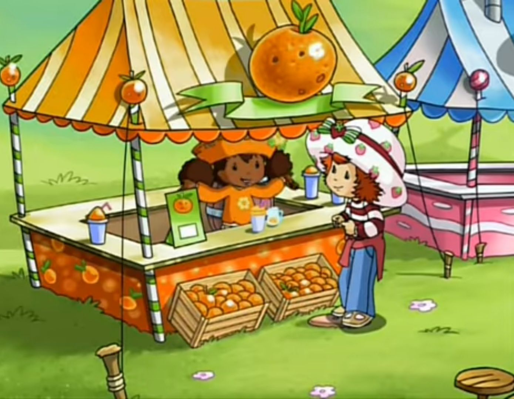
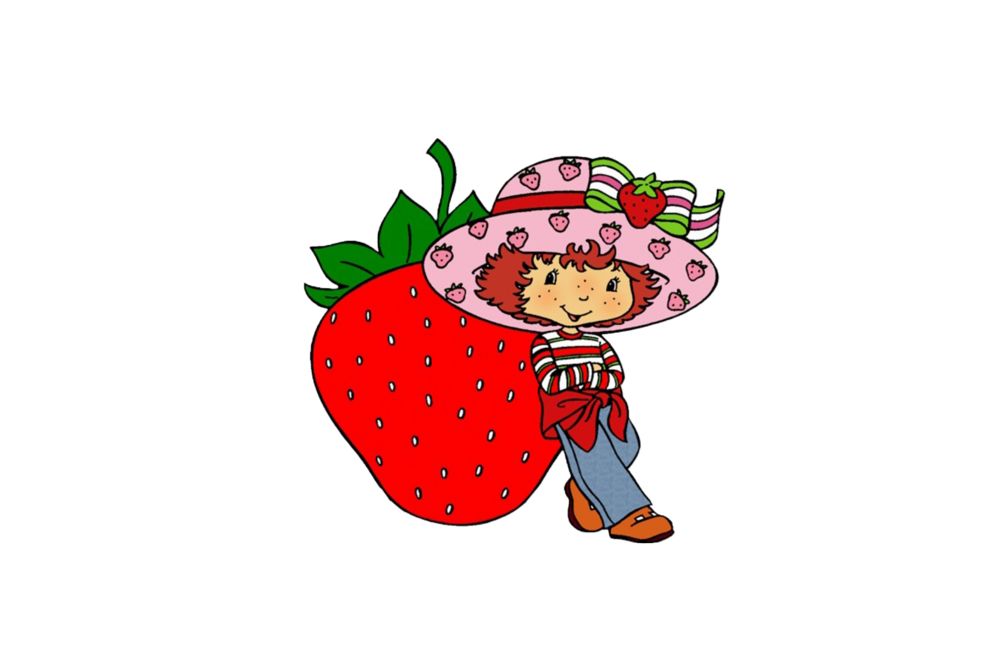

Contact Us

Any questions or queries please feel free to contact us
Address - Bishopstown, Cork, Ireland. T12 P928
Phone Number - +353 (0)214326100
Email -MyCIT Email
Tweets by IamStrawberry



Address - Bishopstown, Cork, Ireland. T12 P928
Phone Number - +353 (0)214326100
Email -MyCIT Email
